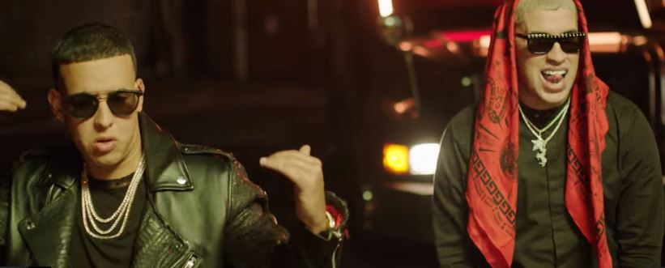

- El artista comenzó su carrera en el 2013. En el trayecto, se fue haciendo más conocido y
levantó su popularidad de una manera impresionante en los últimos años.
- A lo largo de su camino en el ámbito musical, ha logrado colaboraciones con grandes cantantes
del
género de la música urbana como Daddy Yankee, Yandel, Don Omar, Nicky Jam y muchos más.
- El éxito de Bad Bunny se puede ver reflejado en los números de sus canciones publicadas en
diferentes
plataformas digitales, reconocido por Spotify como el artista más escuchado.
Las cinco canciones que han marcado la carrera del famoso cantante puertorriqueño, Bad Bunny son:
- DAKITI
- MIA (feat Drake)
- LA CANCION
- CALLAITA
- YONAGUNI